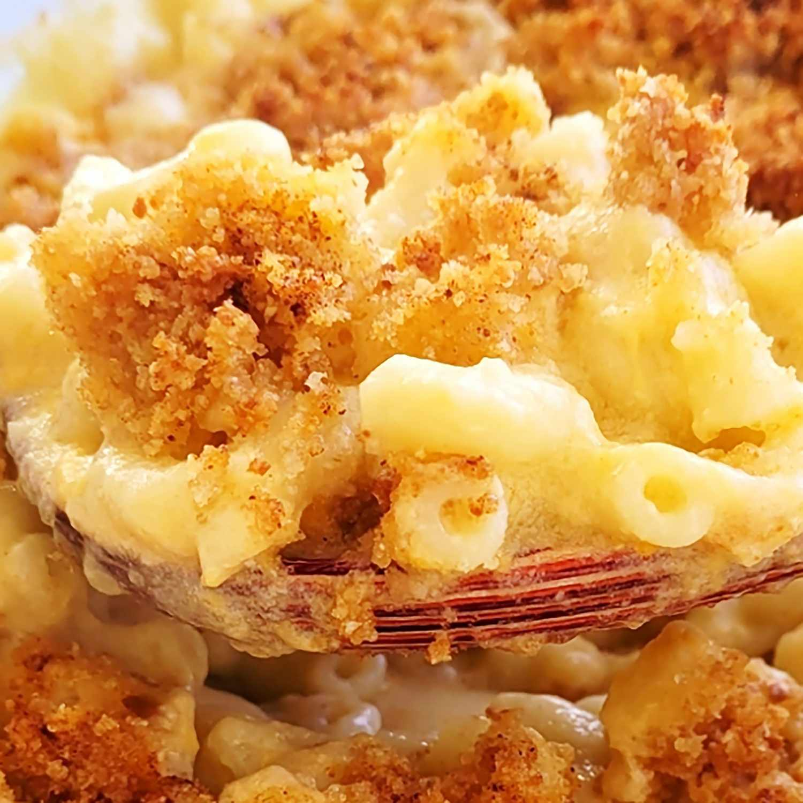

Mac and Cheese Recipe

Description
Mac and cheese is a classic American comfort food made with cooked pasta and a cheesy sauce. The sauce is typically made with a combination of butter, flour, milk, and cheese, and can be customized with different types of cheese or additional ingredients like bacon or vegetables. Baked mac and cheese is a popular variation that includes a crispy breadcrumb topping.
Ingredients
- 8 oz of pasta
- 2 tablespoons of butter
- 2 tablespoons of flour
- 2 cups of milk
- 2 cups of shredded cheese
- 1/2 teaspoon of salt
- 1/4 teaspoon of pepper
- 1/4 teaspoon of paprika
- 1/4 teaspoon of garlic powder
- 1/4 cup of breadcrumbs
Steps
- Cook pasta according to package instructions.
- Melt butter in a saucepan over medium heat.
- Whisk in flour and cook for 1-2 minutes.
- Gradually whisk in milk until smooth.
- Bring to a simmer and cook until thickened.
- Stir in cheese, salt, pepper, paprika, and garlic powder until melted.
- Combine pasta and cheese sauce in a baking dish.
- Sprinkle breadcrumbs on top.
- Bake at 350°F for 20-25 minutes until bubbly and golden brown.
- Let cool slightly before serving.